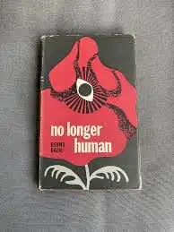
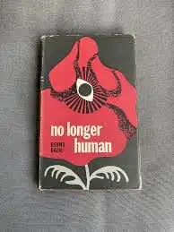

Who am I?
Hi, my name is Angely. I am a Systems Engineering student at Francisco de Paula Santander University in Colombia. I am particularly interested in web development, cybersecurity, and data analysis, and I enjoy learning how these areas connect to create efficient and secure technological solutions.
 
